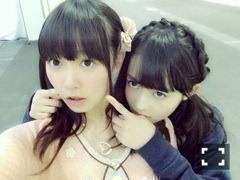
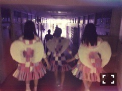

| 2014/10 05 Sun | 闇カレー。606回目 |

OVERTURE創刊
おめでとうございます。
アイドル×ファッション
なんですか。最高やんか
その記念すべき第一号に
乃木坂46大特集だなんて...
小さくだけど、私服パパラッチ
バッグとかちょこちょこ載ってるよ。
どのページもスタイリッシュ！
素敵だから買うしかないよ〜
みんなかわいい〜
9日発売のBOMBも
よろしくお願いします。
月刊エンタメのMV撮影密着にも
ちょこっと写ってるよ！

アンダーMV
あの日 僕は咄嗟に嘘をついた
予告編公開されました。
ドラマ仕立てになっています。
7th以来の湯浅監督！
演劇部の照明係を担当しました。
もっと頑張らなきゃって
思えた日でした。
撮影が終わった後
すぐに櫻の園を見た！
つみきみほさん物憂げで素敵だ。
撮影した好きなシーンが
櫻の園のオマージュでした。
今回の衣装はとっても華やか。
秋の素材。
全編はType-Cで見てね！
この前ある撮影して大興奮して、
その前はのぎ天ロケして、
次の日は買い物してたら
素敵な靴に出会って、
3日にらりんがわざわざ
空想委員会さんがラジオゲストだと
メールしてくれました笑
毎日充実しています。
幸せです。
毎日楽しめる幸せ。
明日、楽しもう。
いよいよ始まります！
全18公演！
プリンシパルと同じくらい。
どうなるか先が見えません。
体力つけます。
前回とはガラリと変わった
アンダーライブを楽しんでください。
モニターがない素の舞台で
歌って踊る私たちを
目に焼き付けて帰ってくださいね。
今は明日に向けて闘っています。
確認ごといっぱいだよー
昨日は眠れなくて
深夜にカレー作りました。
お肉なかったからツナ。
和風だしでエノキと茄子と白菜。
不味くはなかった。
カレーはカレーだった。
ちなみに水っぽいカレー好き。
もっと可愛らしい料理したいなー
最近は豚キムチとかチキン南蛮とか...
南瓜の煮物とかサラダとか。
お兄ちゃんが美味しいと
言ってくれます。
たとえ調理する過程があれ
だったとしても味には問題ない。
料理が楽しくなってきた。
寝かせ玄米、
ベーグルにハマっている。
よく噛む。美味しい。
めっちゃ話逸れたけど、
初日よろしくお願いします！

まりか
コメント(561)
2014/10/05 00:30